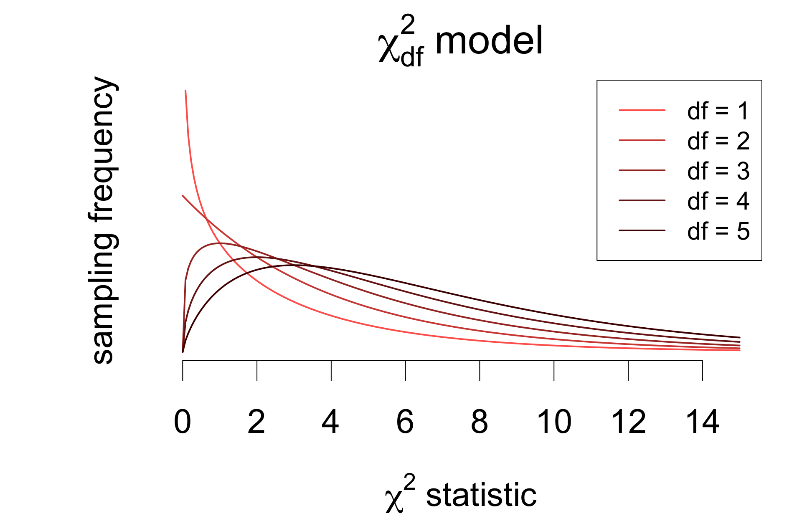
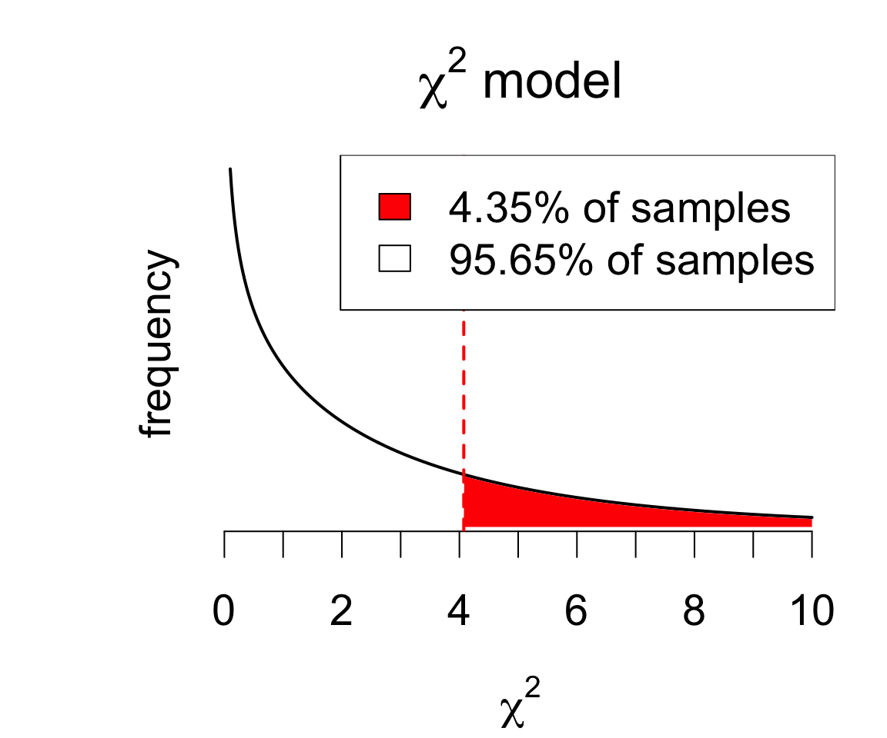

| asthma | no asthma | |
|---|---|---|
| female | 49 | 781 |
| male | 30 | 769 |
Tests of association
Chi-square tests for independence and association in two-way tables
Today’s agenda
- [lecture] tests of association in contingency tables
- [lab] \(\chi^2\) tests and residual analysis in R
Do asthma rates differ by sex?
From a subsample of NHANES data:
Inference for the difference in proportions:
table(asthma$sex, asthma$asthma) |>
prop.test(alternative = 'two.sided',
conf.level = 0.95,
correct = F)
2-sample test for equality of proportions without continuity correction
data: table(asthma$sex, asthma$asthma)
X-squared = 4.0741, df = 1, p-value = 0.04355
alternative hypothesis: two.sided
95 percent confidence interval:
0.0007323913 0.0422460305
sample estimates:
prop 1 prop 2
0.05903614 0.03754693 Interpretation:
There is moderate evidence that asthma prevalence differs between men and women (Z = 2.108, p = 0.0436). With 95% confidence, the difference in prevalence (F - M) is estimated to be between 0.07% and 4.22%, with a point estimate of 2.15%.
This inference relies on a specific measure of association (difference in prevalence) that we can’t always estimate.
Could we test for association between sex and asthma without relying on a specific measure?
Association and independence
Consider the hypotheses:
\[ \begin{cases} H_0: &\text{asthma}\perp\text{sex} \; &(\text{independence})\\ H_A: &\neg(\text{asthma}\perp\text{sex}) \; &(\text{association}) \end{cases} \]
Consider also the proportions:
| asthma | no asthma | total | |
|---|---|---|---|
| female | 0.03008 | 0.4794 | 0.5095 |
| male | 0.01842 | 0.4721 | 0.4905 |
| total | 0.0485 | 0.9515 | 1 |
- \(p_{ij}\): proportion of observations in cell \(ij\)
- \(p_i\), \(p_j\): marginal proportions in row \(i\) or column \(j\)
If sex and asthma are independent:
\[ p_{ij} \approx p_i \times p_j \]
For example, we’d expect:
\[ 0.4721 \approx 0.4905 \times 0.9515 \]
In other words:
- 49% of respondents are men
- 95% of respondents don’t have asthma
- so roughly 49% of 95% would be men without asthma
Basis for a test: expected counts
Expected proportions translate directly to expected counts: \[p_{ij} = p_i \times p_j \quad\Longleftrightarrow\quad n_{ij} = \frac{n_{i\cdot} \times n_{\cdot j}}{n}\]
Actual counts:
| O1 | O2 | total | |
|---|---|---|---|
| G1 | \(n_{11}\) | \(n_{12}\) | \(\color{red}{n_{1\cdot}}\) |
| G2 | \(n_{21}\) | \(n_{22}\) | \(\color{orange}{n_{2\cdot}}\) |
| total | \(\color{blue}{n_{\cdot 1}}\) | \(\color{green}{n_{\cdot 2}}\) | \(n\) |
Expected counts under independence:
| O1 | O2 | total | |
|---|---|---|---|
| G1 | \(\hat{n}_{11} = \frac{\color{red}{n_{1\cdot}} \color{black}{\times} \color{blue}{n_{\cdot 1}}}{n}\) | \(\hat{n}_{12} = \frac{\color{red}{n_{1\cdot}} \color{black}{\times} \color{green}{n_{\cdot 2}}}{n}\) | \(\color{red}{n_{1\cdot}}\) |
| G2 | \(\hat{n}_{21} = \frac{\color{orange}{n_{2\cdot}} \color{black}{\times} \color{blue}{n_{\cdot 1}}}{n}\) | \(\hat{n}_{22} = \frac{\color{orange}{n_{2\cdot}} \color{black}{\times} \color{green}{n_{\cdot 2}}}{n}\) | \(\color{orange}{n_{2\cdot}}\) |
| total | \(\color{blue}{n_{\cdot 1}}\) | \(\color{green}{n_{\cdot 2}}\) | \(n\) |
Idea for a test of independence:
- reject \(H_0\) if actual and expected counts differ enough across the table
- i.e., reject \(H_0\) when \(n_{ij} - \hat{n}_{ij}\) is large across \(i, j\)
Computing expected counts
Actual counts:
| O1 | O2 | total | |
|---|---|---|---|
| G1 | \(n_{11}\) | \(n_{12}\) | \(\color{red}{n_{1\cdot}}\) |
| G2 | \(n_{21}\) | \(n_{22}\) | \(\color{orange}{n_{2\cdot}}\) |
| total | \(\color{blue}{n_{\cdot 1}}\) | \(\color{green}{n_{\cdot 2}}\) | \(n\) |
Expected counts under independence:
| O1 | O2 | total | |
|---|---|---|---|
| G1 | \(\hat{n}_{11} = \frac{\color{red}{n_{1\cdot}} \color{black}{\times} \color{blue}{n_{\cdot 1}}}{n}\) | \(\hat{n}_{12} = \frac{\color{red}{n_{1\cdot}} \color{black}{\times} \color{green}{n_{\cdot 2}}}{n}\) | \(\color{red}{n_{1\cdot}}\) |
| G2 | \(\hat{n}_{21} = \frac{\color{orange}{n_{2\cdot}} \color{black}{\times} \color{blue}{n_{\cdot 1}}}{n}\) | \(\hat{n}_{22} = \frac{\color{orange}{n_{2\cdot}} \color{black}{\times} \color{green}{n_{\cdot 2}}}{n}\) | \(\color{orange}{n_{2\cdot}}\) |
| total | \(\color{blue}{n_{\cdot 1}}\) | \(\color{green}{n_{\cdot 2}}\) | \(n\) |
For the asthma example:
| asthma | no asthma | total | |
|---|---|---|---|
| female | 49 | 781 | 830 |
| male | 30 | 769 | 799 |
| total | 79 | 1550 | 1629 |
| asthma | no asthma | total | |
|---|---|---|---|
| female | 40.25 | 789.7 | 830 |
| male | 38.75 | 760.3 | 799 |
| total | 79 | 1550 | 1629 |
The chi-square (\(\chi^2\)) statistic
A measure of the amount by which actual counts differ from expected counts under independence is the chi (pronounced /ˈkaɪ ) square statistic:
\[ \chi^2 = \sum_{ij} \frac{\left(n_{ij} - \hat{n}_{ij}\right)^2}{\hat{n}_{ij}} \qquad\left(\sum_\text{all cells} \frac{(\text{observed} - \text{expected})^2}{\text{expected}}\right) \]
Cell-wise calculation:
| asthma | no asthma | |
|---|---|---|
| female | \(\frac{(49 - 40.25)^2}{40.25}\) | \(\frac{(781 - 789.7)^2}{789.7}\) |
| male | \(\frac{(30 - 38.75)^2}{38.75}\) | \(\frac{(769 - 760.3)^2}{760.3}\) |
Result:
| asthma | no asthma | |
|---|---|---|
| female | 1.901 | 0.09691 |
| male | 1.975 | 0.1007 |
Chi-square statistic: \[ \chi^2 = 1.9014 + 1.9751 + 0.0969 + 0.1007 = 4.0741 \]
Sampling distribution for \(\chi^2\)
Under \(H_0\), the \(\chi^2\) statistic has a sampling distribution that can be approximated by a \(\chi^2_1\) model.
- subscript indicates degrees of freedom parameter
The model assumes no expected counts are too small.
- rule of thumb: at least 10 (\(\hat{n}_{ij} \geq 10\))
- consequences: if \(\hat{n}_{ij}\) are too small, the statistic is inflated relative to the model, leading to a higher type I error rate

Computing \(p\) values
\[ \begin{cases} H_0: &\text{asthma}\perp\text{sex} \; &(\text{independence})\\ H_A: &\neg(\text{asthma}\perp\text{sex}) \; &(\text{association}) \end{cases} \]
To determine the test outcome, find the \(p\)-value:
\[ P(\chi^2_1 > \chi^2_\text{obs}) = P(\chi^2_1 > 4.074) = 0.0435 \]
So if asthma and sex were independent, only 4% of random samples would produce a table that deviates from expected counts by more than what we observed.

pchisq(4.074, df = 1, lower.tail = F)[1] 0.04354804Implementation in R
The R implementation is chisq.test(...).
- input: contingency table
- no constraints on row/column arrangement
# construct table and pass to chisq.test
table(asthma$sex, asthma$asthma) |>
chisq.test(correct = F)
Pearson's Chi-squared test
data: table(asthma$sex, asthma$asthma)
X-squared = 4.0741, df = 1, p-value = 0.04355The data provide moderate evidence that asthma prevalence is associated with sex (\(\chi^2\) = 4.074 on 1 degree of freedom, p = 0.0435).
Residuals in \(\chi^2\) tests
The residual for each cell is defined as a standardized difference between the observed and expected count:
\[r_{ij} = \frac{n_{ij} - \hat{n}_{ij}}{\sqrt{\hat{n}_{ij}}} \]
Examining residuals can indicate the source(s) of an inferred association.
- \(r_{ij} > 0\): observation exceeds expectation
- \(r_{ij} < 0\): observation is under expectation
- large \(|r_{ij}|\) explain the association
# store test result
rslt <- chisq.test(asthma.tbl, correct = F)
# examine residuals
rslt$residuals| asthma | no asthma | |
|---|---|---|
| female | 1.379 | -0.3113 |
| male | -1.405 | 0.3173 |
Look for the largest residuals:
Asthma prevalence is higher-than-expected among women and lower-than-expected among men.
Continuity correction
The \(\chi^2\) test for independence is typically applied with Yates’ continuity correction.
This consists in using a modified version of the test statistic:
\[ \chi^2_\text{Yates} = \sum_{ij} \frac{\left(|n_{ij} - \hat{n}_{ij}| - 0.5\right)^2}{\hat{n}_{ij}} \]
- every other detail of the test is the same
- doesn’t change expected counts
- residuals are still computed as \(\frac{n_{ij} - \hat{n}_{ij}}{\sqrt{\hat{n}_{ij}}}\)
Implementation:
# construct table and pass to chisq.test
table(asthma$sex, asthma$asthma) |>
chisq.test(correct = T)
Pearson's Chi-squared test with Yates' continuity correction
data: table(asthma$sex, asthma$asthma)
X-squared = 3.6217, df = 1, p-value = 0.05703Note the larger \(p\)-value – this changes the conclusion!
Spot any similarities?
Compare the \(\chi^2\) test with inference on the difference in proportions.
# chi square test
table(asthma$sex, asthma$asthma) |>
chisq.test(correct = T)
Pearson's Chi-squared test with Yates' continuity correction
data: table(asthma$sex, asthma$asthma)
X-squared = 3.6217, df = 1, p-value = 0.05703# difference in proportions
table(asthma$sex, asthma$asthma) |>
prop.test(alternative = 'two.sided',
conf.level = 0.95,
correct = T)
2-sample test for equality of proportions with continuity correction
data: table(asthma$sex, asthma$asthma)
X-squared = 3.6217, df = 1, p-value = 0.05703
alternative hypothesis: two.sided
95 percent confidence interval:
-0.0004958005 0.0434742223
sample estimates:
prop 1 prop 2
0.05903614 0.03754693 the tests are identical!
the difference in proportions \(\hat{p}_F - \hat{p}_M\) is one specific measure of association
next time we’ll learn about other measures, which also have the same inference attached
Extending to \(I \times J\) tables
FAMuSS data:
| CC | CT | TT | total | |
|---|---|---|---|---|
| African Am | 16 | 6 | 5 | 27 |
| Asian | 21 | 18 | 16 | 55 |
| Caucasian | 125 | 216 | 126 | 467 |
| Hispanic | 4 | 10 | 9 | 23 |
| Other | 7 | 11 | 5 | 23 |
| total | 173 | 261 | 161 | 595 |
Expected counts:
| CC | CT | TT | total | |
|---|---|---|---|---|
| African Am | 7.85 | 11.84 | 7.31 | 27 |
| Asian | 15.99 | 24.13 | 14.88 | 55 |
| Caucasian | 135.8 | 204.8 | 126.4 | 467 |
| Hispanic | 6.69 | 10.09 | 6.22 | 23 |
| Other | 6.69 | 10.09 | 6.22 | 23 |
| total | 173 | 261 | 161 | 595 |
- expected counts and chi-square statistic are calculated exactly the same way
- degrees of freedom are now \((I - 1)\times(J - 1)\)
- appropriate provided all \(\hat{n}_{ij} > 1\) and most (~80%) \(\hat{n}_{ij} \geq 5\)
Extending to \(I\times J\) tables
In detail:
| CC | CT | TT | |
|---|---|---|---|
| African Am | \(\frac{(16 - 7.85)^2}{7.85}\) | \(\frac{(6 - 11.84)^2}{11.84}\) | \(\frac{(5 - 7.306)^2}{7.306}\) |
| Asian | \(\frac{(21 - 15.99)^2}{15.99}\) | \(\frac{(18 - 24.13)^2}{24.13}\) | \(\frac{(16 -14.88)^2}{14.88}\) |
| Caucasian | \(\frac{(125 - 135.8)^2}{135.8}\) | \(\frac{(216 - 204.9)^2}{204.9}\) | \(\frac{(126 - 126.4)^2}{126.4}\) |
| Hispanic | \(\frac{(4 - 6.687)^2}{6.687}\) | \(\frac{(10 - 10.09)^2}{10.09}\) | \(\frac{(9 - 6.224)^2}{6.224}\) |
| Other | \(\frac{(7 - 6.687)^2}{6.687}\) | \(\frac{(11 - 10.09)^2}{10.09}\) | \(\frac{(5 - 6.224)^2}{6.224}\) |
Then:
\[\begin{cases} &\chi^2 = \sum \text{all cells above} = 19.4 \\ &P(\chi^2_{8} > 19.4) = 0.01286 \end{cases} \quad\Longrightarrow\quad \text{reject hypothesis of no association}\]
Inference for \(I\times J\) tables in R
The implementation is the same as for a \(2\times 2\) table:
# construct table and pass to chisq.test
table(famuss$race, famuss$actn3.r577x) |>
chisq.test()
Pearson's Chi-squared test
data: table(famuss$race, famuss$actn3.r577x)
X-squared = 19.4, df = 8, p-value = 0.01286The data provide evidence of an association between race and genotype (\(\chi^2\) = 19.4 on 8 degrees of freedom, p = 0.01286).
Which genotype/race combinations are contributing most to this inferred association?
Residual analysis
# store result of test; display residuals
rslt <- chisq.test(tbl)
rslt$residuals| CC | CT | TT | |
|---|---|---|---|
| African Am | 2.909 | -1.698 | -0.8531 |
| Asian | 1.252 | -1.247 | 0.2897 |
| Caucasian | -0.9254 | 0.7789 | -0.03244 |
| Hispanic | -1.039 | -0.02804 | 1.113 |
| Other | 0.1209 | 0.2868 | -0.4905 |
Again look for the largest absolute residuals to explain inferred association.
African American and Asian populations have higher CC and lower CT frequencies than would be expected if genotype were independent of race.